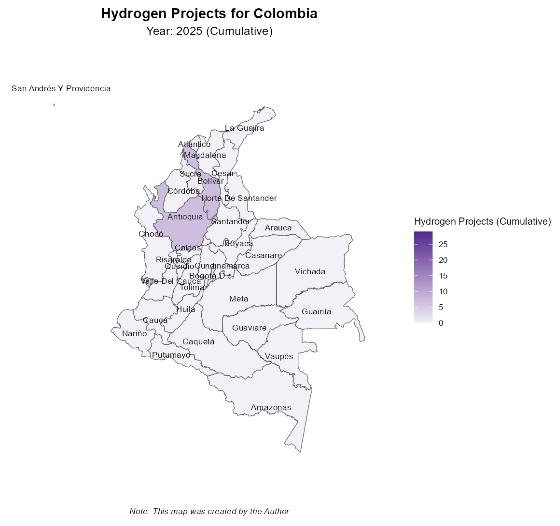
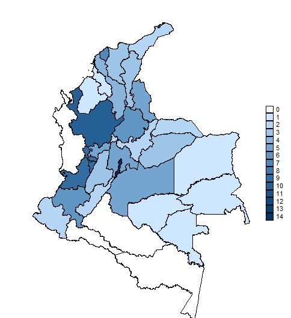

Volkswirt (B.Sc. Universidad de los Andes, M.A. HTW Berlin). Ich baue Paneldatensätze aus amtlichen Quellen, schätze ökonometrische Modelle und mache die Ergebnisse als Karten und Grafiken lesbar.
Economist (B.Sc. Universidad de los Andes, M.A. HTW Berlin). I build panel datasets from official sources, estimate econometric models and turn the results into maps and charts that are easy to read.
miguelvanegas3@gmail.com
· Berlin
Wie hängen installierte Wasserstoffkapazität und Kohleabhängigkeit mit der Entwicklung der Wettbewerbsfähigkeit kolumbianischer Departements zusammen, wenn man Unterschiede in der Umweltperformance berücksichtigt?
How are installed hydrogen capacity and coal dependence related to the competitiveness of Colombian departments once differences in environmental performance are taken into account?

Alle 48 Karten habe ich in R aus den harmonisierten Paneldaten erstellt: Wettbewerbsindizes IDC (Kolumbien) und IDERE (Chile), Wasserstoffprojekte aus IEA, IRENA und nationalen Quellen. Die Jahre 2026 bis 2030 beruhen auf angekündigten Projekten und dienen nur der Beschreibung, nicht der Schätzung.
I created all 48 maps in R from the harmonised panel data: competitiveness indices IDC (Colombia) and IDERE (Chile), hydrogen projects from IEA, IRENA and national sources. The years 2026 to 2030 are based on announced projects and are descriptive only, they are not used in the estimation.
| ModellModel | Variable | KoeffizientCoefficient | SignifikanzSignificance | N |
|---|---|---|---|---|
| Basis-FE (Kolumbien)Baseline FE (Colombia) | Wasserstoffkapazität (MW)Hydrogen capacity (MW) | 3,19e−73.19e−7 | p < 0,05p < 0.05 | 396 |
| Interaktion mit KohleInteraction with coal | Wasserstoff × KohleanteilHydrogen × coal share | −2,12e−5−2.12e−5 | p < 0,01p < 0.01 | 396 |
| Präsenz-DummyPresence dummy | mindestens ein Projektat least one project | ≈ −0,03≈ −0.03 | n.s. | 396 |
| Verzögerung (t−1)Lag (t−1) | WasserstoffkapazitätHydrogen capacity | −3,65e−7−3.65e−7 | p < 0,01p < 0.01 | 363 |
| Gepoolt CO + CLPooled CO + CL | WasserstoffkapazitätHydrogen capacity | 7,51e−87.51e−8 | n.s. | 604 |
| Driscoll-Kraay | Wasserstoff × KolumbienHydrogen × Colombia | −3,39e−7−3.39e−7 | p < 0,01p < 0.01 | 604 |
Welchen Effekt hatten die zwischen 2011 und 2017 umgesetzten Clusterinitiativen auf das BIP pro Kopf und die Jahreslöhne der Gemeinden?
What effect did the cluster initiatives implemented between 2011 and 2017 have on municipal GDP per capita and annual wages?
Methode: Difference-in-Differences mit Gemeinde- und Jahres-Effekten. Die Zuordnung der behandelten Gemeinden habe ich in zwei Varianten aufgebaut. Basis 2 ist meine eigene, genauere Auswahl: zwei Monate Recherche über Firmenverzeichnisse, Handelskammern, Energieversorger und Produktionsdaten.
Method: difference-in-differences with municipality and year effects. I built the assignment of treated municipalities in two versions. Base 2 is my own, more precise selection, based on two months of research across company directories, chambers of commerce, energy suppliers and production data.

Die sieben Karten zeigen, wie sich die Clusterinitiativen von 2011 bis 2017 über die Departements ausgebreitet haben (0 bis 14 Initiativen je Departement, dunkler = mehr). Eigene Darstellung auf Basis der Daten von Red Cluster Colombia.
The seven maps show how the cluster initiatives spread across the departments from 2011 to 2017 (0 to 14 initiatives per department, darker = more). Own illustration based on data from Red Cluster Colombia.
Effekte in Prozent (Log-Punkte × 100), ohne Ausreißer und ohne die größten Städte. Über alle Initiativen hinweg: +6,9 % BIP pro Kopf und +6,6 % Löhne, jeweils signifikant auf 1 %. Energie und IKT sind die einzigen Sektoren mit konsistent positiven Effekten auf beide Größen.
Effects in percent (log points × 100), excluding outliers and the largest cities. Across all initiatives: +6.9 % GDP per capita and +6.6 % wages, each significant at 1 %. Energy and ICT are the only sectors with consistently positive effects on both outcomes.